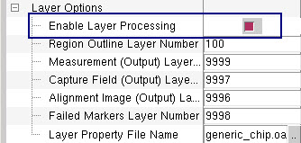
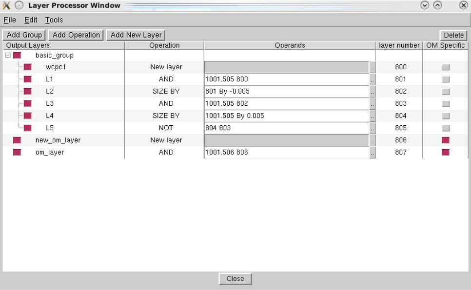
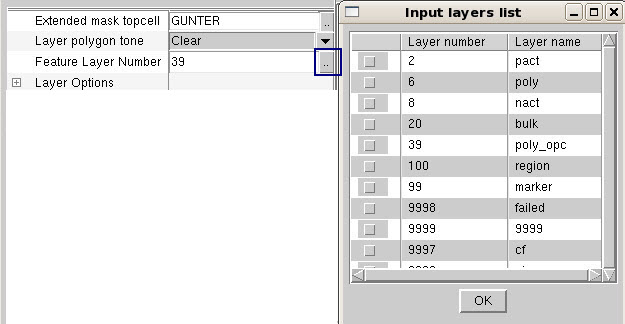

In CMi, you can
define boolean operations more than any two layers from the original
layers in the layout or from derived intermediate layers from previous boolean
operations.
Procedure
- In the CMi Layer Options section,
click the Enable Layer Processing radio
button to enable the layer processing.
Figure 1. Layer Processing Options
- Select Tools > Layer Processing (Booleans) to
invoke the Layer Processor window. In the Layer Processor window, perform
the following steps:
- Click Add Group to add a group of
operations or Add Operation to
add entries for individual boolean operations.
Clicking Add Group generates
a tree with a parent node (Group Name) and a child node (Operation).
The group is a method to collect operations in a tree structure
and does not affect the processing of the operations.
- You can specify operation,
operands, layer numbers by clicking on each column for the entry.
You can also specify that the boolean operations be processed on
OM_align markers only by clicking the OM
Specific radio button.
- To delete an entry from the
table list, select the entry and click the Delete button.
Figure 2. Layer Processor Window Example
- Click Close to close the window.
- You can select any of the
original layers or newly-defined layers by entering the Feature
Layer number (or click the “..”
button to invoke the Input Layers List dialog box to select multiple
layers).
Figure 3. Input Layer Specification
- Click Run in the CMi window. If the Layout Clip Output option is
enabled, the defined operations are executed and the newly-defined
layers are added to the output clip.
- If the defined boolean operations
reference input layers that do not exist in the clip, the operations
are not executed and an error similar to the following is added
to the output transcript:
Can't execute operation clip_temp AND: Input layer, 1001.505, does not exist or is empty